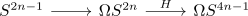

integral EHP sequence
Definition
Let $n \geq 0$. Then there exists a fiber sequence

where the first map is the unit of the adjunction and the second map is the generalized generalized hopf map
Proof
Let $F$ be the fiber
We consider the cohomological serre spectral sequence to get
\begin{displaymath}
\begin{sseqpage}[cohomological Serre grading, classes = { draw = none } ]
\end{sseqpage}
\end{displaymath}Then by